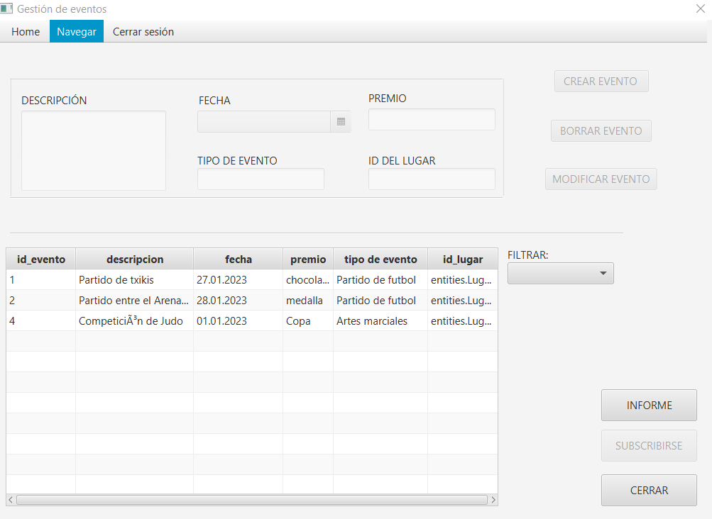
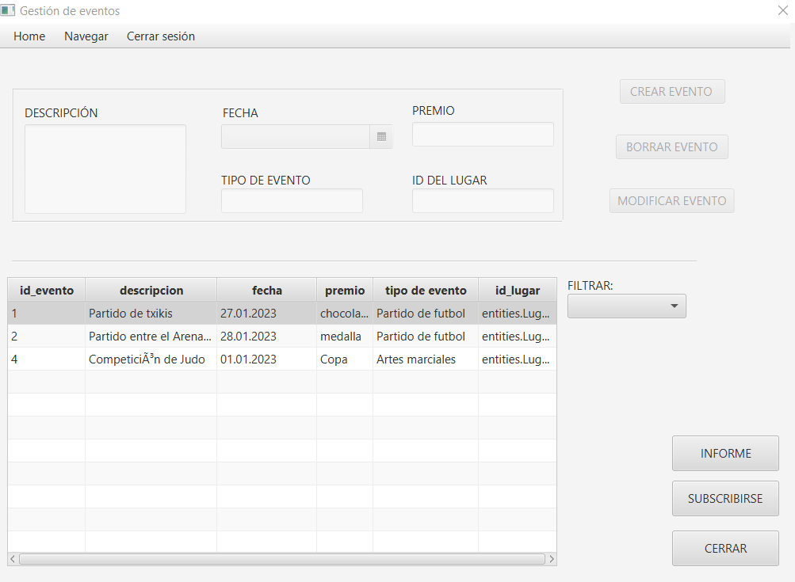
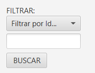
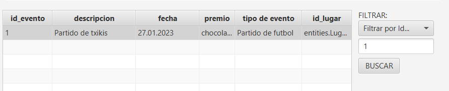
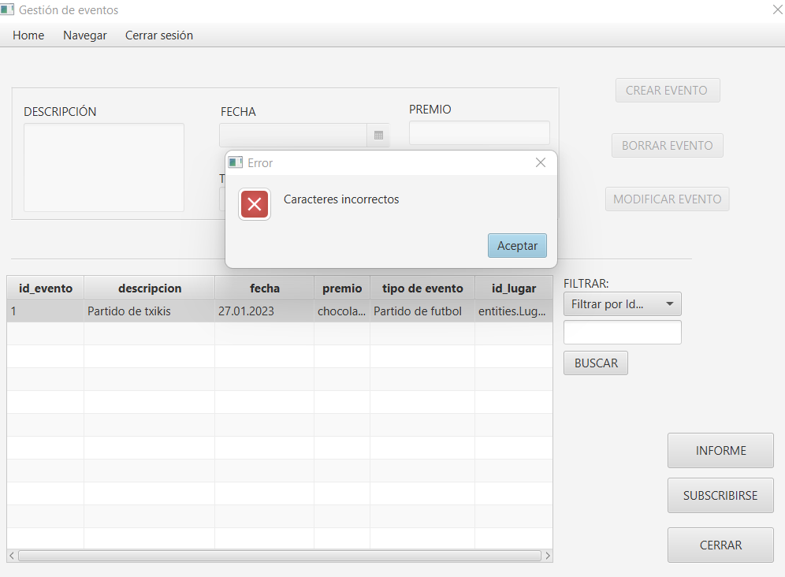
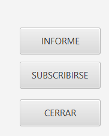
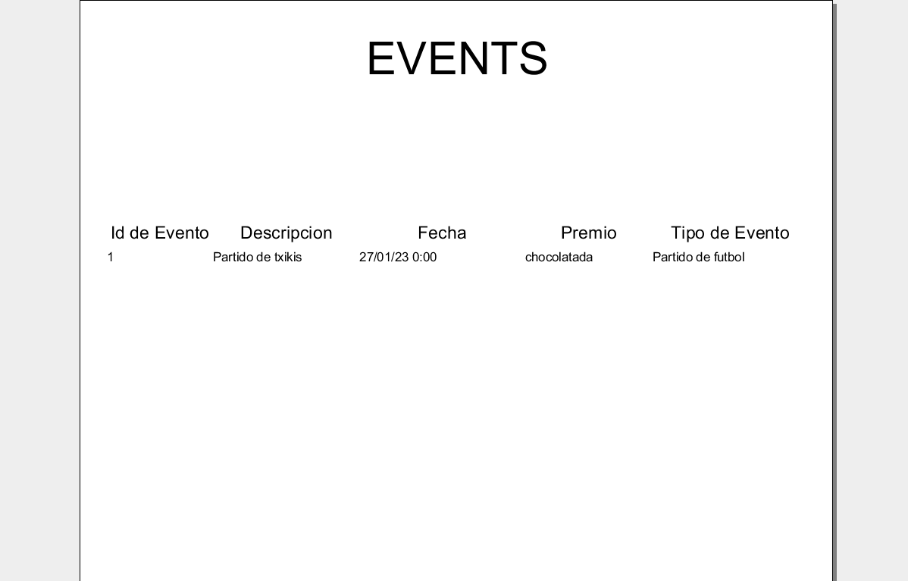
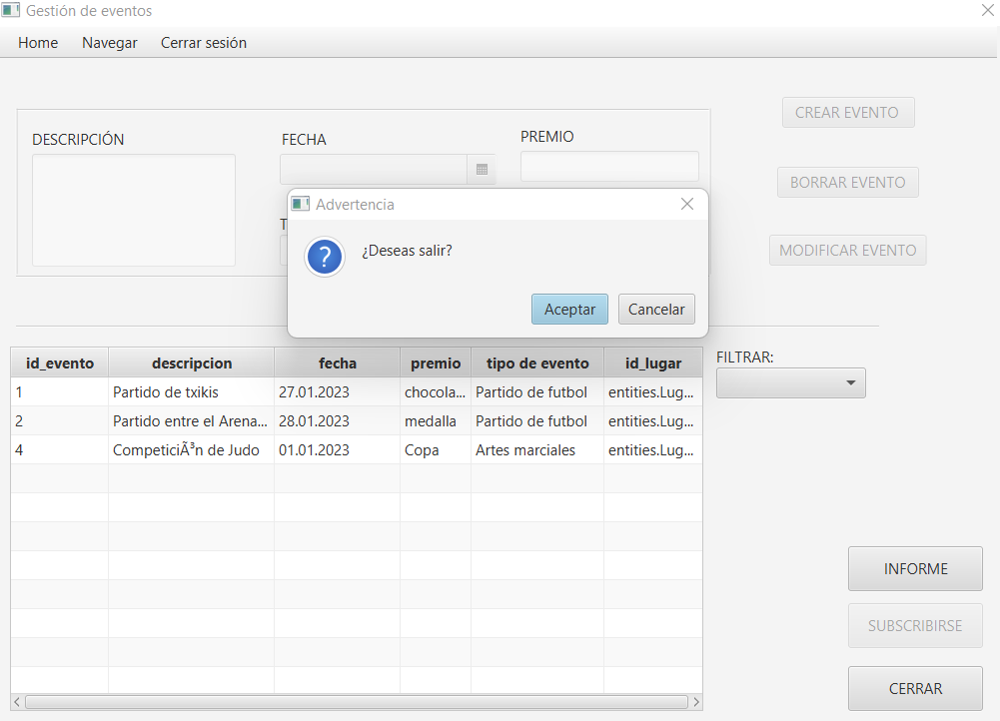
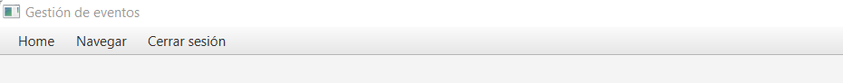

Fig 1: Ventana Evento
Al abrir la ventana, se mostrará una ventana como la de arriba, al ser un Usuario corriente, sus acciones están limitadas, por lo que solo puede filtrar o subscribirse a eventos, generar un informe, y como no, cerrar la ventana.
Fig 2: Al abrirse la ventana, esrán habilitados todos los botones de abajo a la derecha exceptuando el botón de "Subscribirse"
 Al hacer click en cualquier fila de la tabla, se habilitará el botónFig 3: Esto es el filtrado:
Para usarlo solo hay que hacer click en la cajita que hay debajo de donde pone "FILTRAR:" y aparecerán dos opciones de filtrado; por id de evento, por tipo de evento y ninguno.
Fig 4: Por ejemplo, al elegir filtrar por id del evento y ecribir un id de un evento que existe, la tabla mostrará dicho evento
En caso de que se intente filtrar un dato inexistente, la tabla, simplemente, no mostrará nada.
Fig 5: En caso de que intente filtrar un dato de carácter incorrecto, se le avisará con una advertencia y se borrará los datos que ha intendo filtrar
Fig 6: Para generar un informe solo tiene que darle al botón de informe. Tardará solo unos segundos en mostrar un informe
 He aquí el informe:Fig 6.2: Para subscribirse, más de lo mismo. Haga click en el botón y se enviará un correo al email perteneciente a su cuenta como recordatorio.
Fig 7: Si desea salir de la aplicación, haga click en el botón de cerrar y se abrirá una ventana de advertencia para confirmar su decision
Fig 12: Navegación Menubar
Arriba a la izquierda tenemos un menubar para navegar entre distintas ventanas, con varias opciones: